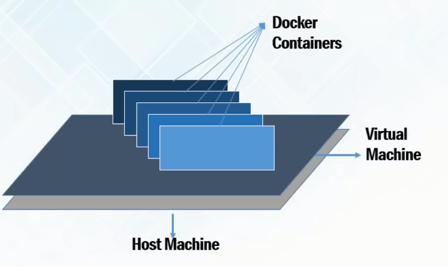
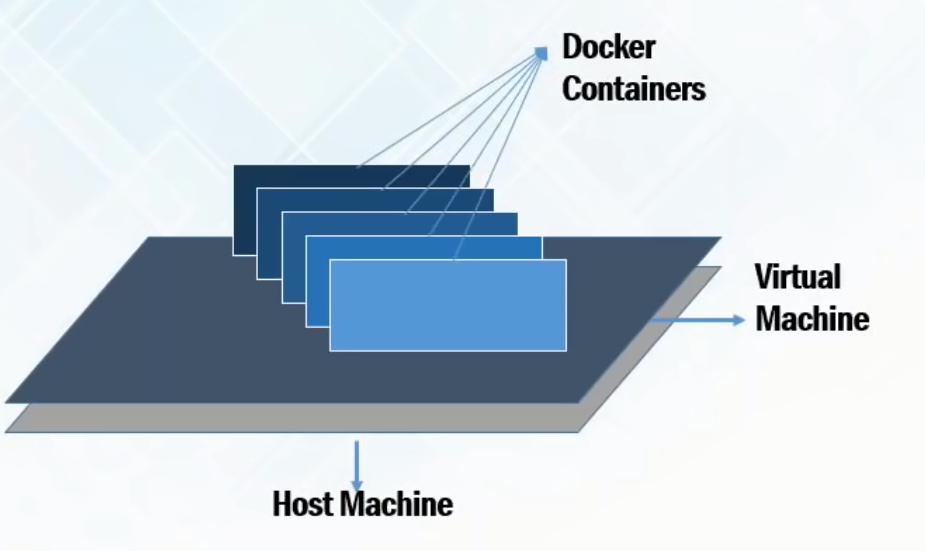

Microservices and Docker
Abdullo Magrupov
https://github.com/abdullo-magrupovAgenda
- Monolith
- Microservices
- Docker
Monolithic architecture

Microservice architecture

What to choose?

Deployment issues?
Docker is the solution!

Why not virtual machines!

Virtual machines vs Docker
 
